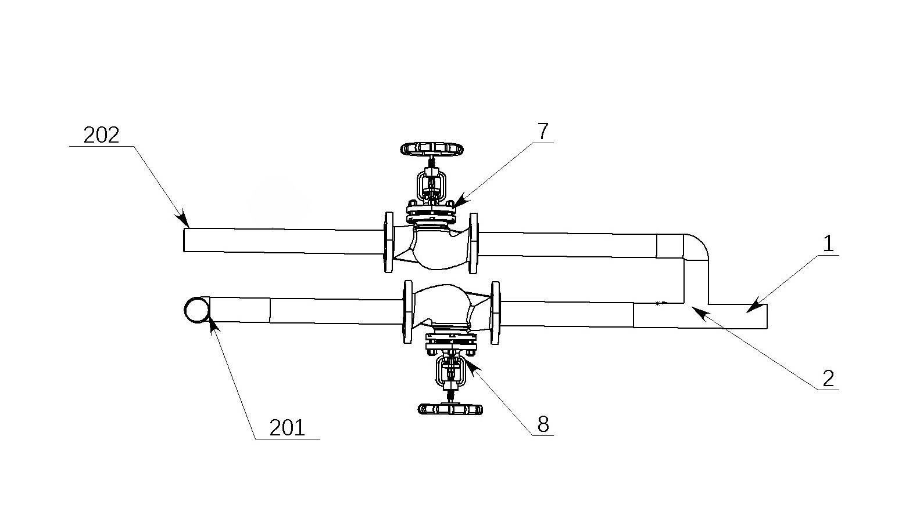
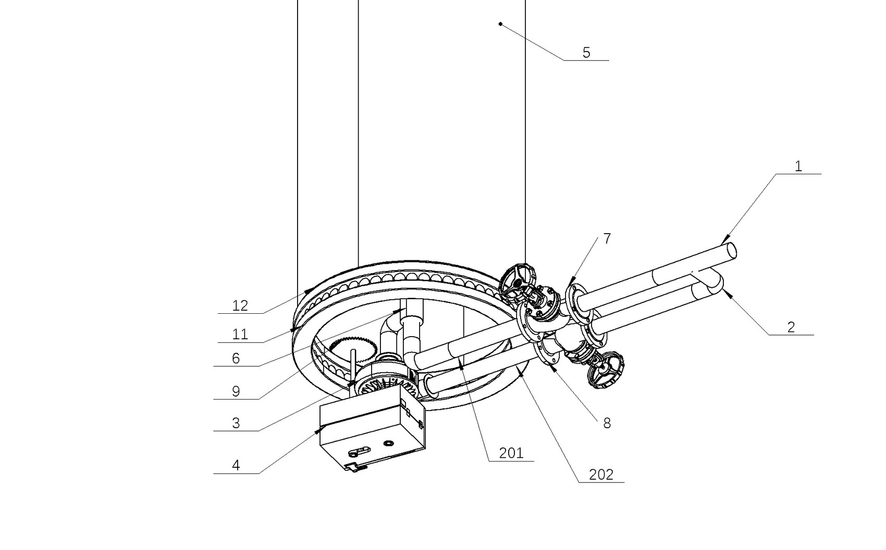
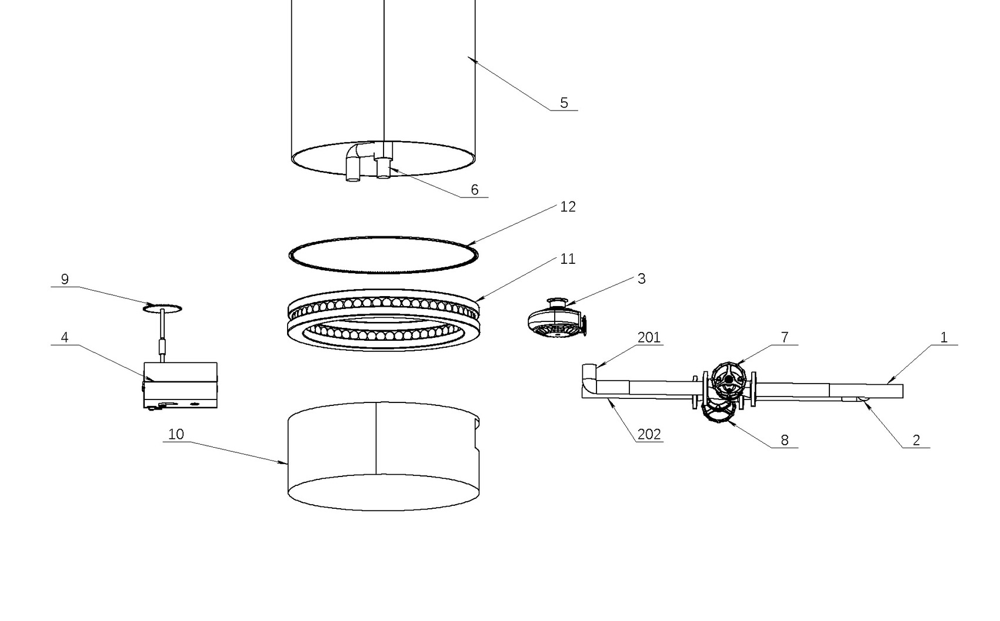
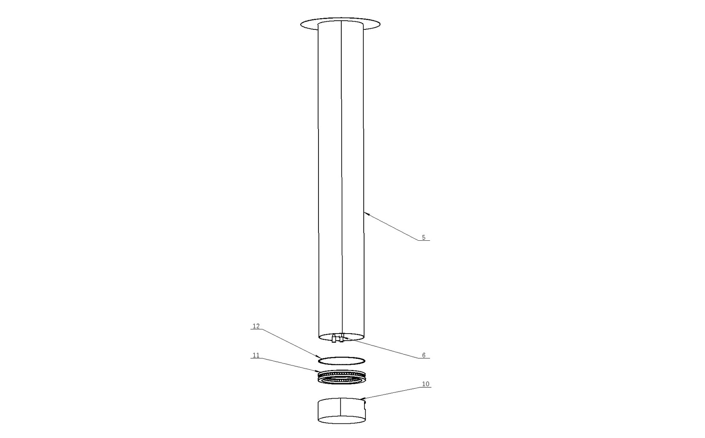
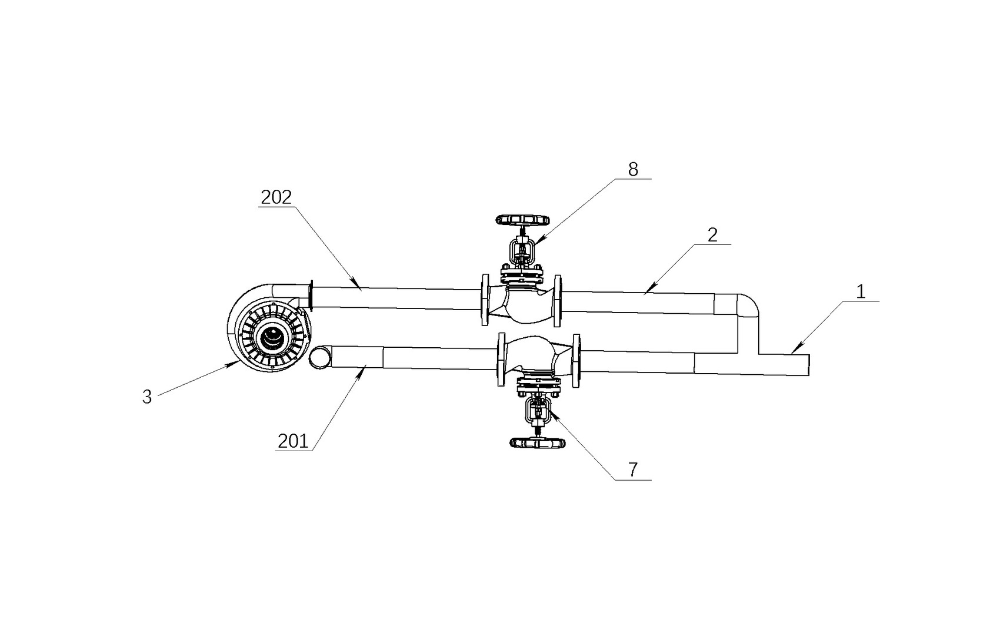
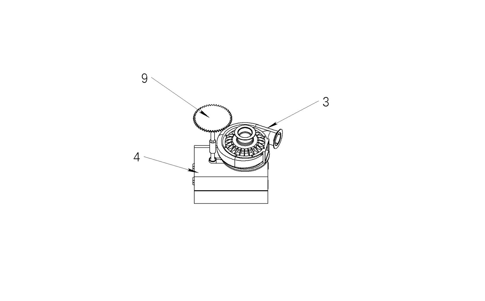

融合废气余能回收、滚筒帆助航、轻量评分与安全规则——从硬件装置到智能决策到仿真展示的完整技术闭环。
从数据采集到安全保护的完整技术栈
集成风速风向仪、波浪雷达、主机 ECU、排气背压传感器与 AIS 数据，构建多源异构感知网络。当前版本预留 6 类船舶与环境数据接口，并采用本地样本库进行演示。
滚筒帆转子（1–6 座可配置）、废气透平、进气/旁通调节阀与传动结构。滚筒帆直径 3.2 m，高 18–24 m，转速范围 30–160 rpm。
演示级轻量评分模型输入风速、风向、船速、主机负荷与海况等级，结合安全规则校核输出推荐策略。当前版本用于趋势判断与原型展示。
排气背压保护（阈值 25 kPa 自动旁通）、恶劣海况锁定（≥ 5 级停止助航）、人工急停联锁。安全规则引擎独立于轻量评分模型链路运行。
驾驶舱大屏（实时态势）、机理可视化（物理动画）、Streamlit 仿真平台（交互决策）——三个界面分别面向监控、解释与实验场景。
航次碳账本自动计算每段航程的 CO₂ 减排量、等效节能与 CII 改善，形成可追溯、可审计的绿色航运数据链。
每一项都面向实际航运场景的工程约束
传统滚筒帆依赖独立电机驱动，额外消耗船舶电力。海帆智擎通过废气透平回收主机排气能量驱动滚筒旋转，在中东—东亚样本工况中，简化模型估算可降低外部供能需求约 62%，系统综合能效比约 68%；该结果属于样本工况估算，需待台架与实船验证。
输入统一默认工况参数（风速 12.6 m/s、风向 128°、船速 14.2 kn、主机负荷 72%），轻量评分模型与安全规则共同生成推荐策略。该结果用于竞赛原型的趋势判断和交互展示，不替代实船控制。
系统将航线划分为侧风富集区、低风区、恶劣海况区等典型航区，自动切换经济节能、性能优先、主机保护与安全锁定四种运行模式。基于本地样本库的规则回放，模式切换一致率约 91%，待更多真实航次数据验证。
每次航行自动生成碳账本——记录每段航程的节能收益、CO₂ 减排量与 CII 评级变化——为船东提供可量化的绿色航运证据，直接支撑 IMO DCS 与 CII 合规报告。
四种模式覆盖正常航行到极端工况的完整状态空间
| 模式 | 触发条件 | 系统行为 | 适用场景 |
|---|---|---|---|
| 经济节能 | 风速 6–20 m/s，海况 ≤ 3 级，主机负荷适中 | 优先降低油耗与碳排放，滚筒帆以最佳效率转速运行 | 默认模式 |
| 性能优先 | 航期紧张，或逆风/侧风条件有利 | 在安全约束内最大化推力输出，允许更高转速 | 手动激活 |
| 主机保护 | 排气背压 ≥ 22 kPa，或主机负荷 > 88% | 自动增大旁通阀开度，减少废气取能，保护主机 | 自动触发 |
| 安全锁定 | 海况 ≥ 5 级，或风速 > 25 m/s | 滚筒帆停转并锁定，系统进入纯监测模式 | 自动触发 |
突出硬件创新：废气透平、传动结构、滚筒帆与能量链路
图例说明：结构编号用于对应管路、阀门、透平、传动件、轴承密封和滚筒帆筒体等部件；箭头用于说明"主机废气—透平取能—齿轮传动—滚筒帆旋转—马格努斯推力"的能量链路。

废气管路 1/2 → 7/8 → 201/202展示排气主通道、取能支路、旁通支路和阀门组件的连接关系，是"取能不牺牲主机安全"的结构依据。

装配关系 管路 → 底座 → 筒体说明滚筒帆底座、双排气管路、阀门组件与传动机构之间的空间关系，支撑装置化方案表达。

部件分解 筒体 / 轴承 / 底座 / 管路展示筒体、底部支承、轴承圈、密封件、传动部件与管路接口，完整呈现硬件系统组成。

立式筒体 支承 → 旋转 → 推力突出高筒体、底部轴承与连接件的支承关系，为后续强度校核、振动分析和转速匹配预留依据。

取能链路 废气 → 透平 → 传动显示透平取能单元与阀门、管路之间的连接路径，直接对应可视化页面中的废气粒子和能量链路动画。

传动单元 透平 → 齿轮 → 旋转突出取能部件、齿轮传动和执行机构，说明系统不是单纯软件预测，而有明确机械传动设想。
基于中东—东亚航线的仿真对比
| 对比项 | 传统滚筒帆 | 海帆智擎 | 提升 |
|---|---|---|---|
| 驱动方式 | 独立电机 | 废气余能透平 | 外部供能 −62% |
| 控制策略 | 固定转速 | 评分模型动态推荐 | 推力 +34% |
| 安全保护 | 基础限位 | 多层规则引擎 | 独立安全链路 |
| CII 改善 | ≤ 0.2 级 | 0.5–0.8 级 | 显著提升 |
| 碳排放数据 | 手动估算 | 航次碳账本 | 可审计追溯 |
基于 1–20 万 DWT 远洋船舶的样本工况估算（待验证）